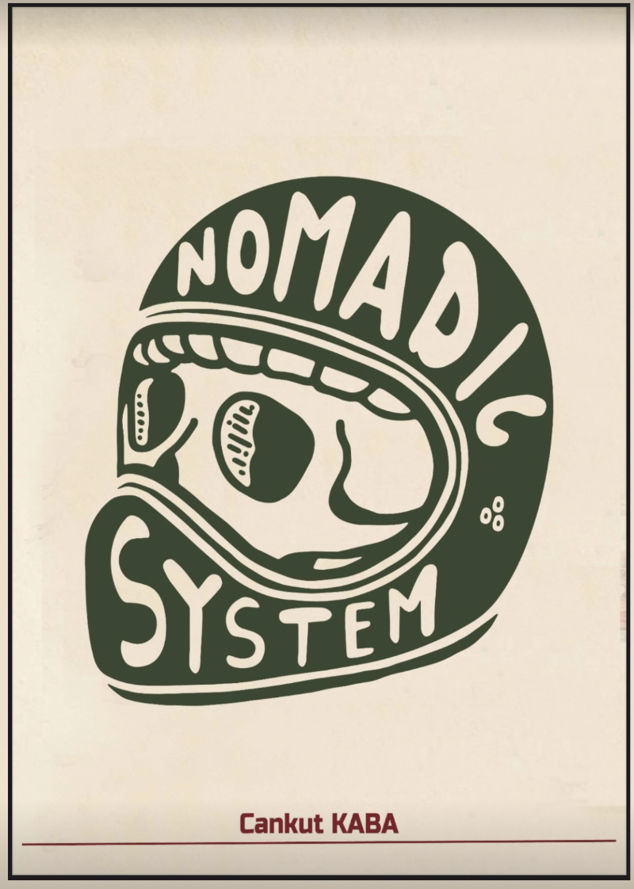

Hareket Kültürü
Movement Culture
Disiplin, konuma bağlı değildir
Discipline is not tied to place
Nomadic System, bedeni tek bir salona, tek bir programa ya da tek bir yaşam düzenine sıkıştırmadan güçlendiren bir hareket felsefesidir.
Nomadic System is a movement philosophy built to strengthen the body without locking it into one gym, one program, or one way of living.
Sistem; evde, açık alanda, seyahatte ya da yoğun bir iş gününün ortasında uygulanabilecek kadar esnek, sonuç üretecek kadar nettir. Amaç yalnızca antrenman yapmak değil; hareketi günlük hayatın doğal bir refleksine dönüştürmektir.
The system is flexible enough for home, open air, travel, or the middle of a demanding workday, and structured enough to create results. The aim is not simply to train, but to make movement a natural reflex of daily life.
Hareket etmek için zorunlu konumlar icat etme. Güç, adapte olabildiğin yerde başlar.
Do not invent mandatory locations for movement. Strength begins where you can adapt.
Burada premium olan şey gösteriş değil; sürdürülebilirliktir. Programlar, hareket kapasiteni geliştirirken hayatının temposuna uyum sağlar. Disiplin sertleşmek değil, değişen koşullar içinde çizgini koruyabilmektir.
What feels premium here is not spectacle; it is sustainability. The programs improve your movement capacity while fitting the pace of your life. Discipline is not rigidity, but the ability to keep your line as conditions change.
HER NEREDE OLMAK İSTERSEN
WHEREVER YOU WANT TO BE

Founder
Founder
Cankut Kaba
ornek.
ornek.
“ornek.”
“ornek.”